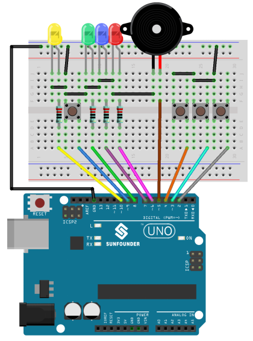
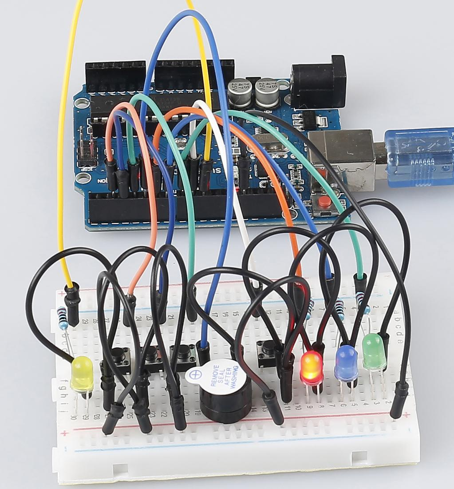

Lesson 19 Answer Machine¶
Introduction¶
In quiz shows, especially entertainment activities (e.g. competitive answering activities), organizers often apply a buzzer system in order to accurately, fairly and visually determine the seat number of a responder.
Now the system can illustrate the accuracy and equity of the judgment by data, which improves the entertainment. At the same time, it is more fair and just. In this lesson, we will use some buttons, buzzers, and LEDs to make a quiz buzzer system.


Experimental Principle¶
Button 1, 2 and 3 are answer buttons, and button 4 is the reset button. If button 1 is pressed first, the buzzer will beep, the corresponding LED will light up and all the other LEDs will go out. If you want to start another round, press button 4 to reset.
The schematic diagram:

Experimental Procedures
Step 1:Build the circuit
Step 2: Open the code file.
Step 3: Select the Board and Port.
Step 4: Upload the sketch to the board.
{kind=link}
Now, first press button 4 to start. If you press button 1 first, you will see the corresponding LED light up and the buzzer will beep. Then press button 4 again to reset before you press other buttons.
{kind=link}
Code¶
The code for this experiment may be a bit long. But the syntax issimple. Let’s see.**Workflow:** Read the state of button 4, if button 4 is pressed, theLED on pin 10 is illuminated while reading the state of the remaining buttons. If one of the buttons is detected to be pressed, the buzzer beeps and lights the corresponding LED until button 4 is pressed again.
Code Analysis 19-1 loop() function¶
b4State = digitalRead(button4); //read the value of button4 to see if it
was pressed.
Serial.println(b4State); //print it value.
//when button4 pressed
if(b4State == 0) //if the button4 is pressed, the b4State=0
{
if(b4State == 0) //confirm that the button4 is pressed. One pin of the
button is connected to pin 9, the other pin is connected to GND, and
when the button is pressed, pin 9 is pulled low.
{
flag = 1; //if so,flag is 1
digitalWrite(LED4, HIGH); //turn the reset LED on
delay(200); //delay 200ms
}
}
if(1 == flag)
{
//read the state of other buttons
b1State = digitalRead(button1);
b2State = digitalRead(button2);
b3State = digitalRead(button3);
//If the button1 press the first
if(b1State == 0) //if button1 is pressed
{
flag = 0; //flag equals to 0
digitalWrite(LED4, LOW);
Alarm(); //buzzer sound
digitalWrite(LED1,HIGH); //turn the LED1 on only
digitalWrite(LED2,LOW);
digitalWrite(LED3,LOW);
while(digitalRead(button4)); //detect the button4,if pressed,out of the
while loop
}
...
Use the same way to detect the button2 and button3, if one of the buttons is detected to be pressed, the buzzer beeps and lights the corresponding LED until button 4 is pressed again.
Code Analysis 19-2 Alarm() function¶
void Alarm()
{
for(int i=0;i<100;i++){
digitalWrite(buzzerPin,HIGH); //the buzzer sound
delay(2); //delay 2ms
digitalWrite(buzzerPin,LOW); //without sound
delay(2); //when delay time changed,the frequency changed
}
}
The alarm() function is to set the buzzer to beep. You can change the frequency and time of the buzzer sound.